Code
library(tidyverse) # For ggplot, dplyr, and friends
library(sf) # For GIS magicShapefiles are special types of data that include information about geography, such as points (latitude, longitude), paths (a bunch of connected latitudes and longitudes) and areas (a bunch of connected latitudes and longitudes that form a complete shape). Nowadays, most government agencies provide shapefiles for their jurisdictions. For global mapping data, you can use the Natural Earth project:
As you read in this week’s readings, projections matter a lot for maps. You can convert your geographic data between different coordinate systems (or projections) fairly easily with {sf}. You can use coord_sf(crs = st_crs("XXXX")) to convert coordinate reference systems (CRS) as you plot, or use st_transform() to convert data frames to a different CRS.
TECHNICALLY coordinate systems and projection systems are different things, but I’m not a geographer and I don’t care that much about the nuance.
There are standard indexes of more than 4,000 of these projections (!!!) at epsg.io.
Super important: When using these projections, you need to specify both the projection catalog (ESRI or EPSG; see here for the difference) and the projection number, separated by a colon (e.g. “ESRI:54030”). Fortunately epsg.io makes this super easy: go to the epsg.io page for the projection you want to use and the page title will have the correct name.
Here are some common ones:
Alternatively, instead of using these index numbers, you can use any of the names listed here, such as:
"+proj=merc": Mercator"+proj=robin": Robinson"+proj=moll": Mollweide"+proj=aeqd": Azimuthal Equidistant"+proj=cass": Cassini-SoldnerI use a lot of different shapefiles in this example. To save you from having to go find and download each individual one, you can download this zip file:
Unzip this and put all the contained folders in a folder named data if you want to follow along. You don’t need to follow along!
Your project should be structured like this:
your-project-name\
some-name.qmd
your-project-name.Rproj
data\
cb_2022_us_county_5m\
...
cb_2022_us_county_5m.shp
...
cb_2022_us_state_20m\
ne_10m_admin_1_states_provinces\
ne_10m_lakes\
ne_10m_rivers_lake_centerlines\
ne_10m_rivers_north_america\
ne_110m_admin_0_countries\
schools_2009\These shapefiles all came from these sources:
This is a slightly cleaned up version of the code from the video.
First we’ll load the libraries we’re going to use:
library(tidyverse) # For ggplot, dplyr, and friends
library(sf) # For GIS magicNext we’ll load all the different shapefiles we downloaded using read_sf():
# Download "Admin 0 – Countries" from
# https://www.naturalearthdata.com/downloads/110m-cultural-vectors/
world_map <- read_sf("data/ne_110m_admin_0_countries/ne_110m_admin_0_countries.shp")
# Download cb_2022_us_state_20m.zip under "States" from
# https://www.census.gov/geographies/mapping-files/time-series/geo/cartographic-boundary.html
us_states <- read_sf("data/cb_2022_us_state_20m/cb_2022_us_state_20m.shp")
# Download cb_2022_us_county_5m.zip under "County" from
# https://www.census.gov/geographies/mapping-files/time-series/geo/cartographic-boundary.html
us_counties <- read_sf("data/cb_2022_us_county_5m/cb_2022_us_county_5m.shp")
# Download "Admin 1 – States, Provinces" from
# https://www.naturalearthdata.com/downloads/10m-cultural-vectors/
us_states_hires <- read_sf("data/ne_10m_admin_1_states_provinces/ne_10m_admin_1_states_provinces.shp")
# Download "Rivers + lake centerlines" from
# https://www.naturalearthdata.com/downloads/10m-physical-vectors/
rivers_global <- read_sf("data/ne_10m_rivers_lake_centerlines/ne_10m_rivers_lake_centerlines.shp")
# Download "Rivers + lake centerlines, North America supplement" from
# https://www.naturalearthdata.com/downloads/10m-physical-vectors/
rivers_na <- read_sf("data/ne_10m_rivers_north_america/ne_10m_rivers_north_america.shp")
# Download "Lakes + Reservoirs" from
# https://www.naturalearthdata.com/downloads/10m-physical-vectors/
lakes <- read_sf("data/ne_10m_lakes/ne_10m_lakes.shp")
# Download from https://data.georgiaspatial.org/index.asp?body=preview&dataId=41516
# after creating an account and logging in
ga_schools <- read_sf("data/schools_2009/DOE Schools 2009.shp")If you look at the world_map dataset in RStudio, you’ll see it’s just a standard data frame with 177 rows and 169 columns. The last column is the magical geometry column with the latitude/longitude details for the borders for every country. RStudio only shows you 50 columns at a time in the RStudio viewer, so you’ll need to move to the next page of columns with the » button in the top left corner.
Because this is just a data frame, we can do all our normal dplyr things to it. Let’s get rid of Antarctica, since it takes up a big proportion of the southern hemisphere:
world_sans_antarctica <- world_map |>
filter(ISO_A3 != "ATA")Ready to plot a map? Here’s all you need to do:
ggplot() +
geom_sf(data = world_sans_antarctica)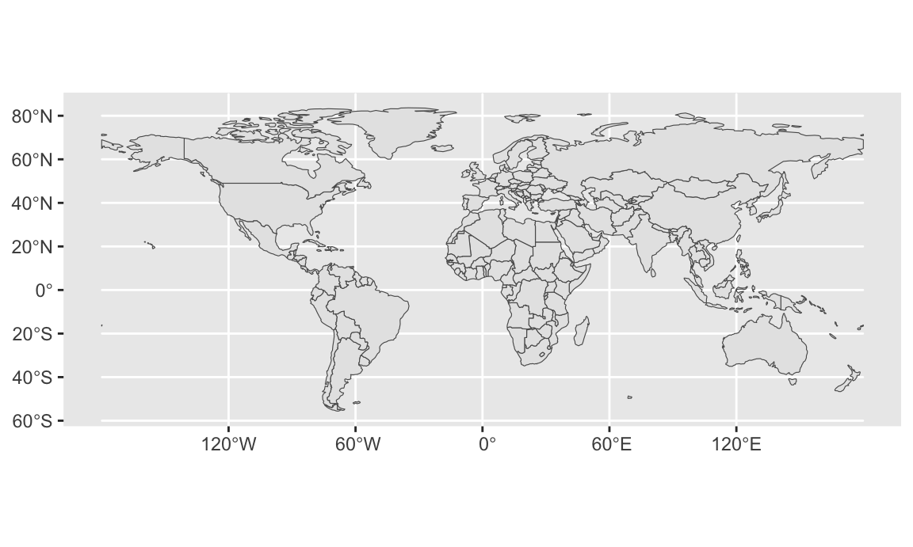
If you couldn’t tell from the lecture, I’m completely blown away by how amazingly easy this every time I plot a map :)
Because this a regular ggplot geom, all our regular aesthetics and themes and everything work:
ggplot() +
geom_sf(data = world_sans_antarctica,
fill = "#669438", color = "#32481B", linewidth = 0.25) +
theme_void()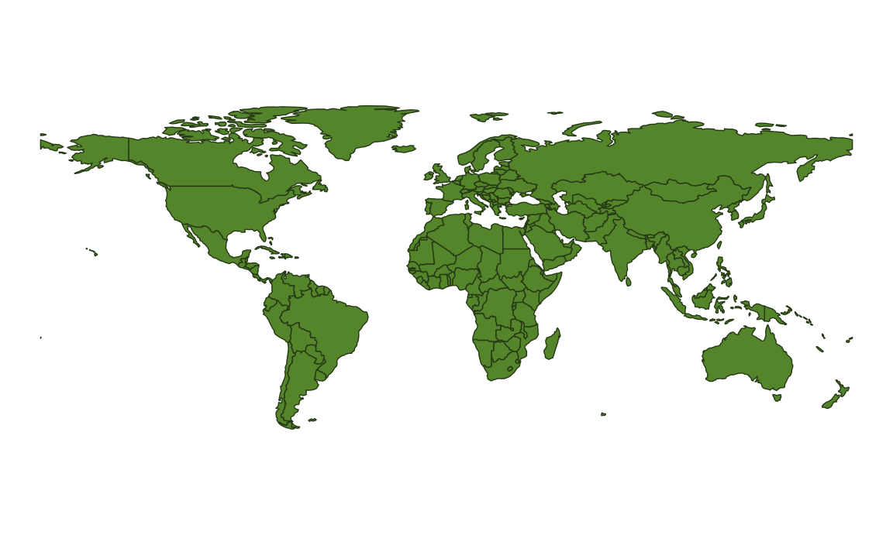
The Natural Earth dataset happens to come with some columns with a coloring scheme with 7–13 colors (MAPCOLOR7, MAPCOLOR9, etc.) so that no countries with a shared border share a color. We can fill by that column:
ggplot() +
geom_sf(data = world_sans_antarctica,
aes(fill = as.factor(MAPCOLOR7)),
color = "#401D16", linewidth = 0.25) +
scale_fill_viridis_d(option = "plasma") +
guides(fill = "none") +
theme_void()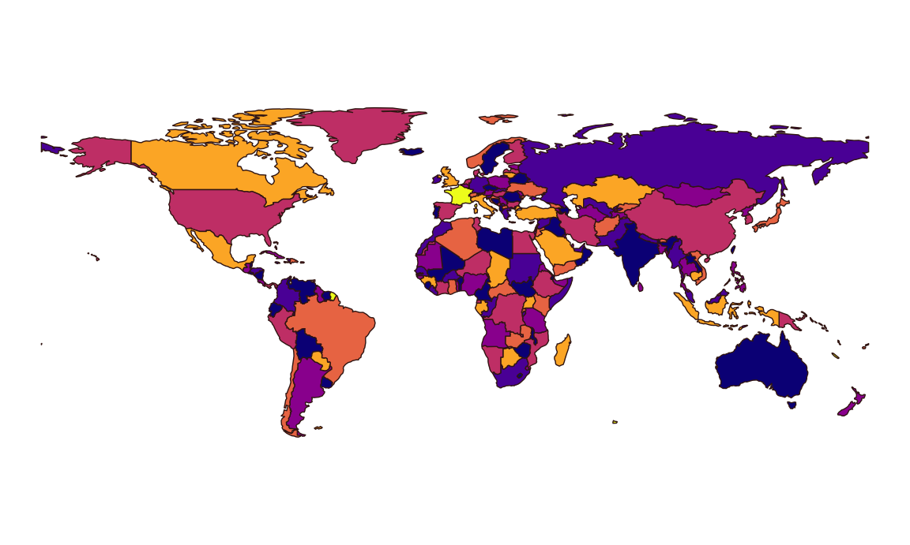
Changing projections is trivial: add a coord_sf() layer where you specify the CRS you want to use.
Here’s Robinson (yay):
ggplot() +
geom_sf(data = world_sans_antarctica,
fill = "#669438", color = "#32481B", linewidth = 0.25) +
coord_sf(crs = st_crs("ESRI:54030")) + # Robinson
# Or use the name instead of the number
# coord_sf(crs = "+proj=robin")
theme_void()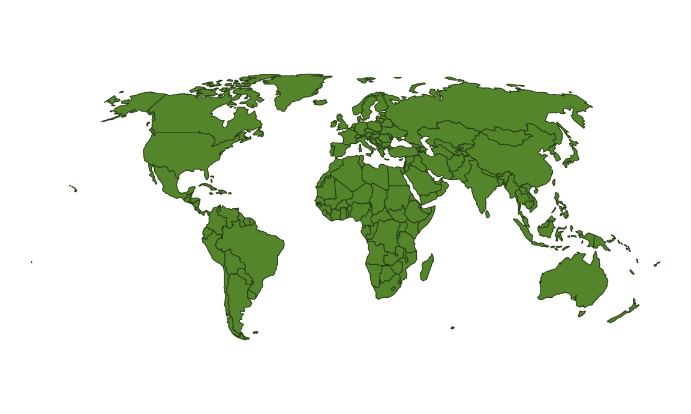
Here’s sinusoidal:
ggplot() +
geom_sf(data = world_sans_antarctica,
fill = "#669438", color = "#32481B", linewidth = 0.25) +
coord_sf(crs = st_crs("ESRI:54008")) + # Sinusoidal
theme_void()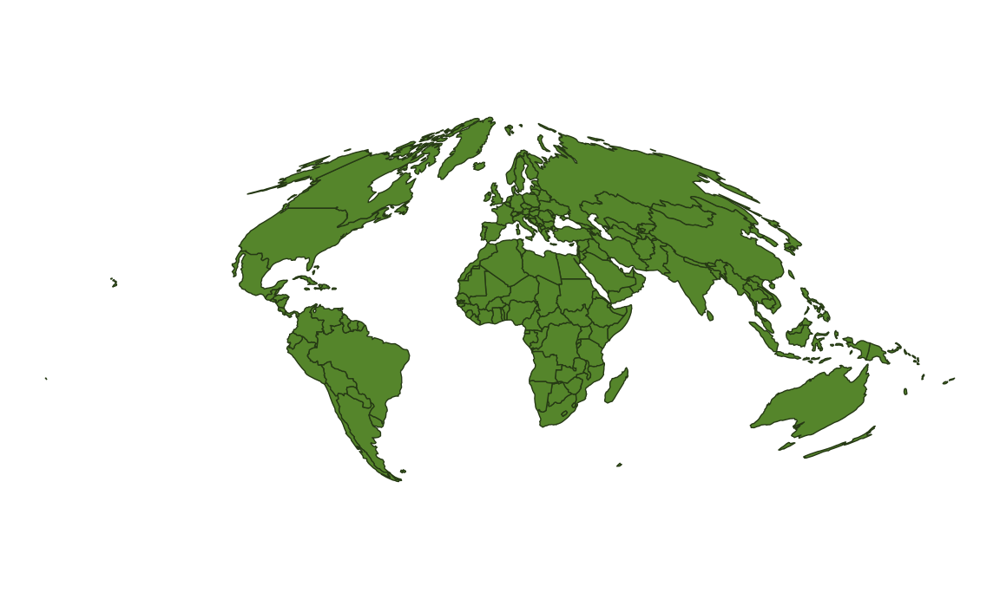
And here’s Mercator (ewww):
ggplot() +
geom_sf(data = world_sans_antarctica,
fill = "#669438", color = "#32481B", linewidth = 0.25) +
coord_sf(crs = st_crs("EPSG:3395")) + # Mercator
# Or use the name instead of the number
# coord_sf(crs = "+proj=merc")
theme_void()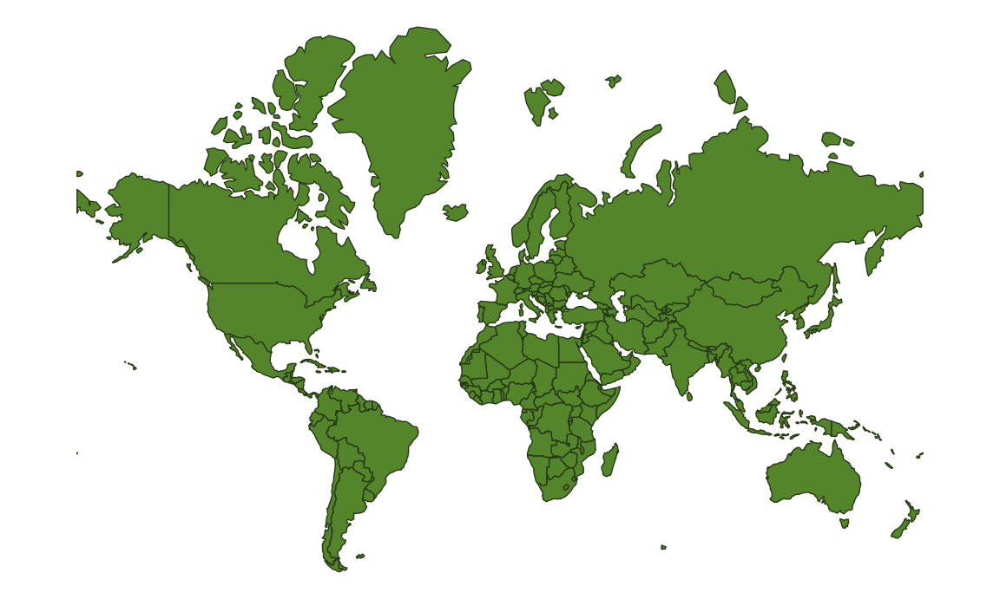
This same process works for any shapefile. The map of the US can also be projected differently—two common projections are NAD83 and Albers. We’ll take the us_states dataset, remove Alaska, Hawaii, and Puerto Rico (they’re so far from the rest of the lower 48 states that they make an unusable map—see the next section for a way to include them), and plot it.
lower_48 <- us_states |>
filter(!(NAME %in% c("Alaska", "Hawaii", "Puerto Rico")))
ggplot() +
geom_sf(data = lower_48, fill = "#192DA1", color = "white", linewidth = 0.25) +
coord_sf(crs = st_crs("EPSG:4269")) + # NAD83
theme_void()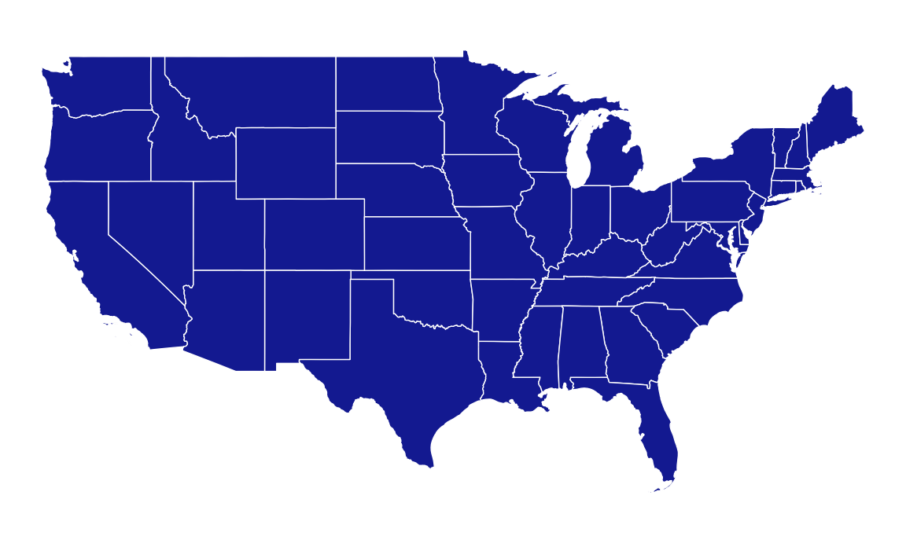
ggplot() +
geom_sf(data = lower_48, fill = "#192DA1", color = "white", linewidth = 0.25) +
coord_sf(crs = st_crs("ESRI:102003")) + # Albers
theme_void()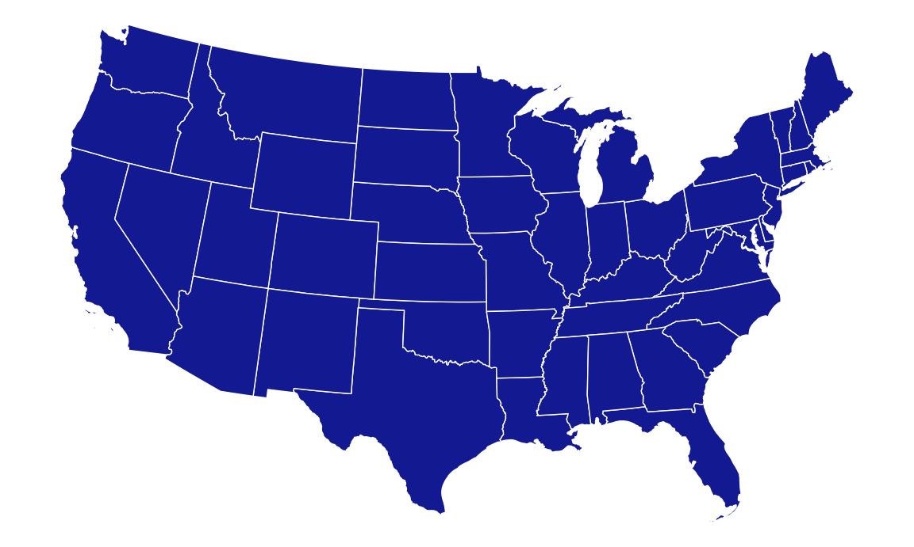
Plotting places like Alaska, Hawaii, and Puerto Rico gets a little tricky since they’re far away from the contiguous 48 states. There’s an easy way to handle it though!
First, there’s a package named {tigris} that provides a neat interface for working with spatial data from the US Census’s TIGER shapefiles. In addition to providing a ton of functions for getting shapefiles for states, counties, voting districts, Tribal areas, military bases, and dozens of other things, {tigris} has a shift_geometry() function that will change the coordinates for Alaska, Hawaii, and Puerto Rico so that they end up in Mexico and the Gulf of Mexico.
library(tigris)
# This is the Census shapefile we loaded earlier. Note how we're not filtering
# out AK, HI, and PR now
us_states_shifted <- us_states |>
shift_geometry() # Move AK, HI, and PR around
ggplot() +
geom_sf(data = us_states_shifted) +
coord_sf(crs = st_crs("ESRI:102003")) + # Albers
theme_void()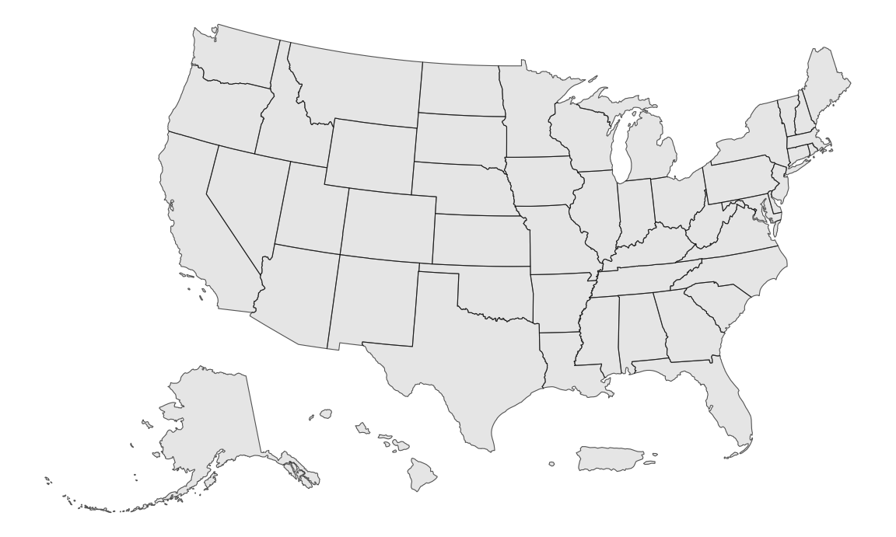
The shift_geometry() function should work on any shapefile. What if you have a shapefile with the coordinates of all public libraries in Alaska? Those will use the actual coordinates, not the shifted-to-Mexico coordinates. Feed that data to shift_geometry() and it should translate any coordinates you have in Alaska, Hawaii, and Puerto Rico to the Mexico area so they’ll plot correctly.
shift_geometry() has an optional position argument that lets you control where the non-contiguous states go. By default they’ll go below the continental US (position = "below"), but you can also use position = "outside" to place them more in relation to where they are in real life:
us_states_shifted <- us_states |>
shift_geometry(position = "outside")
ggplot() +
geom_sf(data = us_states_shifted) +
coord_sf(crs = st_crs("ESRI:102003")) + # Albers
theme_void()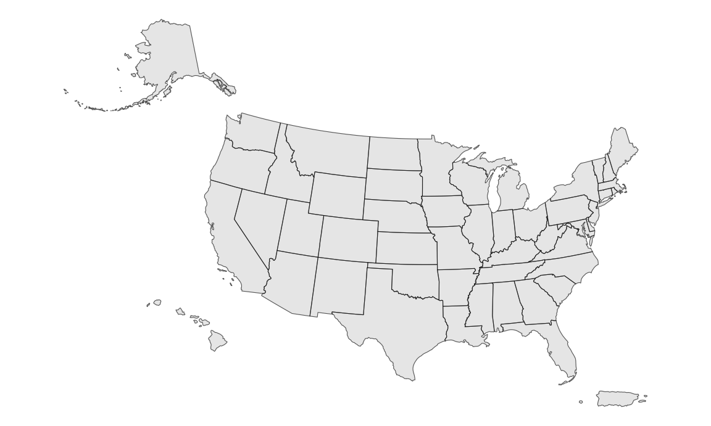
Again, because these shapefiles are really just fancy data frames, we can filter them with normal dplyr functions. Let’s plot just Georgia:
only_georgia <- lower_48 |>
filter(NAME == "Georgia")
ggplot() +
geom_sf(data = only_georgia, fill = "#EC8E55") +
theme_void()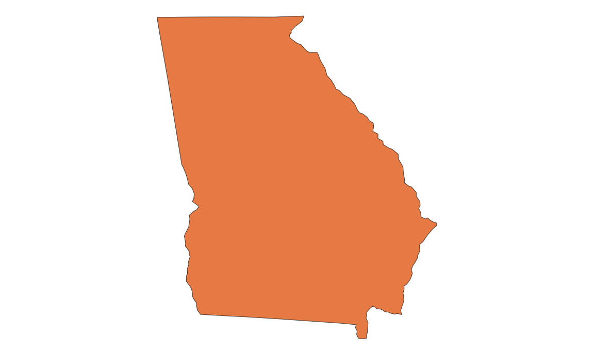
We can also use a different projection. If we look at epsg.io, there’s a version of NAD83 that’s focused specifically on Georgia.
ggplot() +
geom_sf(data = only_georgia, fill = "#EC8E55") +
theme_void() +
coord_sf(crs = st_crs("EPSG:2239")) # NAD83 focused on Georgia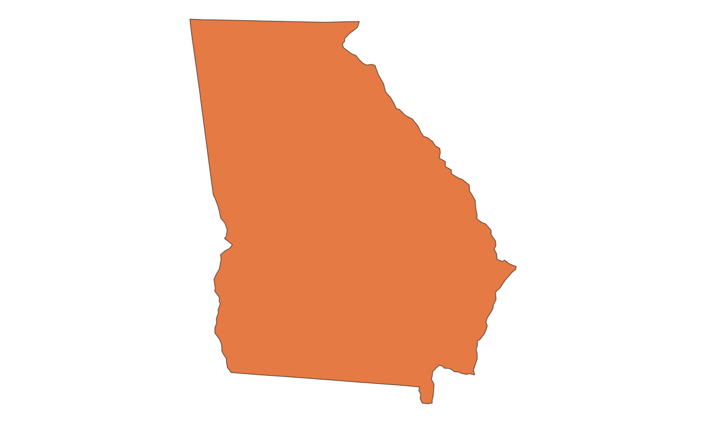
There’s one small final issue though: we’re missing all the Atlantic islands in the southeast like Cumberland Island and Amelia Island. That’s because we’re using the Census’s low resolution (20m) data. That’s fine for the map of the whole country, but if we’re looking at a single state, we probably want better detail in the borders. We can use the Census’s high resolution (500k) data, but even then it doesn’t include the islands for whatever reason, but Natural Earth has high resolution US state data that does have the islands, so we can use that:
only_georgia_high <- us_states_hires |>
filter(iso_3166_2 == "US-GA")
ggplot() +
geom_sf(data = only_georgia_high, fill = "#EC8E55") +
theme_void() +
coord_sf(crs = st_crs("EPSG:2239")) # NAD83 focused on GeorgiaPerfect.
The state shapefiles from the Census Bureau only include state boundaries. If we want to see counties in Georgia, we need to download and load the Census’s county shapefiles (which we did above). We can then add a second geom_sf() layer for the counties.
First we need to filter the county data to only include Georgia counties. The counties data doesn’t include a column with the state name or state abbreviation, but it does include a column named STATEFP, which is the state FIPS code. Looking at lower_48 we can see that the state FIPS code for Georgia is 13, so we use that to filter.
ga_counties <- us_counties |>
filter(STATEFP == 13)Now we can plot just the counties:
ggplot() +
geom_sf(data = ga_counties) +
theme_void()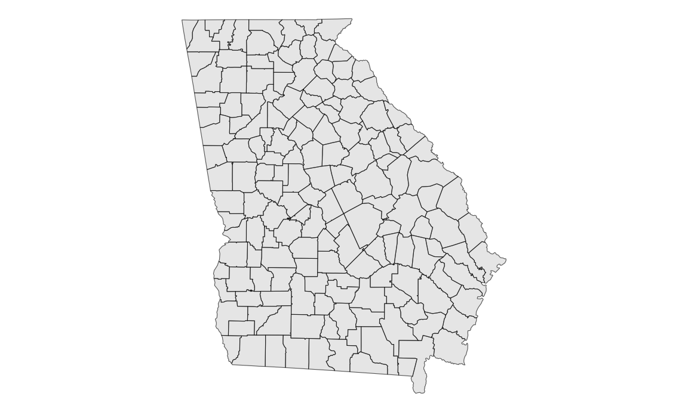
Technically we can just draw the county boundaries instead of layer the state boundary + the counties, since the borders of the counties make up the border of the state. But there’s an advantage to including both: we can use different aesthetics on each, like adding a thicker border on the state:
ggplot() +
geom_sf(data = only_georgia_high, color = "#EC8E55", linewidth = 3) +
geom_sf(data = ga_counties, fill = "#A5D46A", color = "white") +
theme_void()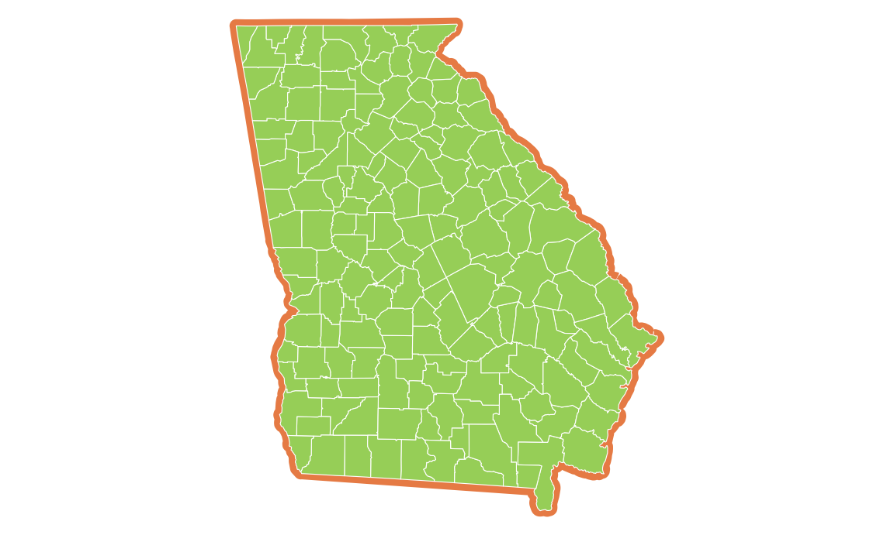
It’s also useful if we want to only show some counties, like metropolitan Atlanta:
atl_counties <- ga_counties |>
filter(NAME %in% c("Cherokee", "Clayton", "Cobb", "DeKalb", "Douglas",
"Fayette", "Fulton", "Gwinnett", "Henry", "Rockdale"))
ggplot() +
geom_sf(data = only_georgia_high, fill = "#EC8E55") +
geom_sf(data = atl_counties, fill = "#A5D46A", color = "white") +
theme_void()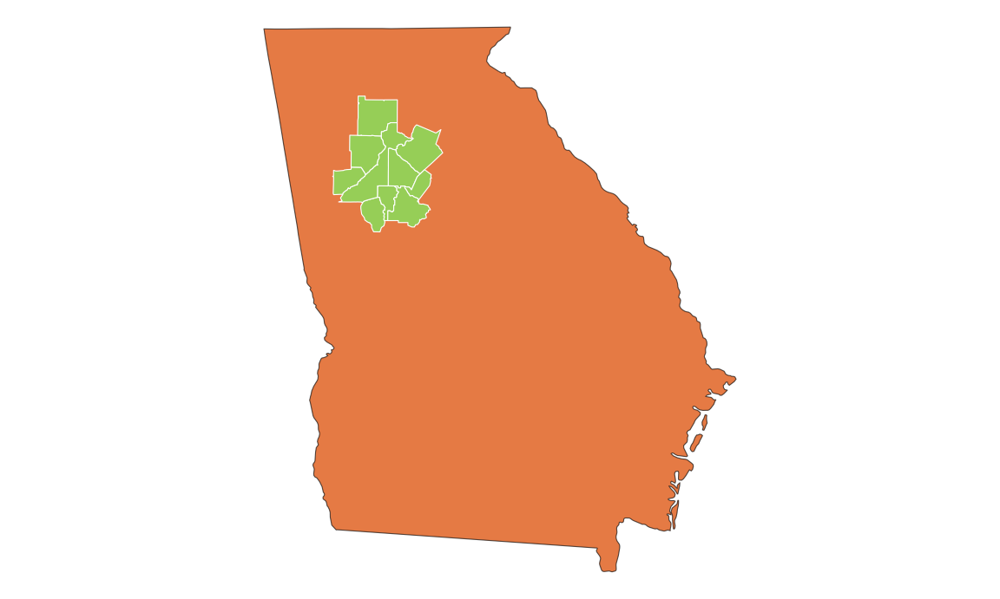
So far we’ve been able to filter out states and counties that we don’t want to plot using filter(), which works because the shapefiles have geometry data for each state or county. But what if you’re plotting stuff that doesn’t follow state or county boundaries, like freeways, roads, rivers, or lakes?
At the beginning we loaded a shapefile for all large and small rivers in the US. Look at the first few rows of rivers_na:
head(rivers_na)
## Simple feature collection with 6 features and 40 fields
## Geometry type: MULTILINESTRING
## Dimension: XY
## Bounding box: xmin: -95 ymin: 36 xmax: -91 ymax: 40
## Geodetic CRS: WGS 84
## # A tibble: 6 × 41
## strokeweig name featurecla scalerank min_zoom min_label ne_id rivernum dissolve name_alt note name_full label wikidataid name_ar name_bn name_de
## <dbl> <chr> <chr> <dbl> <dbl> <dbl> <dbl> <dbl> <chr> <chr> <chr> <chr> <chr> <chr> <chr> <chr> <chr>
## 1 0.15 North… River 12 7 8 1.75e9 NA <NA> <NA> <NA> <NA> <NA> <NA> <NA> <NA> <NA>
## 2 0.2 North… River 12 7 8 1.75e9 NA <NA> <NA> <NA> <NA> <NA> <NA> <NA> <NA> <NA>
## 3 0.2 Salt River 12 7 8 1.16e9 22682 22682Ri… <NA> ID i… Salt Riv… Salt Q745070 <NA> <NA> <NA>
## 4 0.15 Spring River 12 7 8 1.75e9 NA <NA> <NA> <NA> <NA> <NA> <NA> <NA> <NA> <NA>
## 5 0.2 Spring River 12 7 8 1.75e9 NA <NA> <NA> <NA> <NA> <NA> Q7580668 <NA> <NA> <NA>
## 6 0.15 Illin… River 12 7 8 1.16e9 22643 22643Ri… <NA> ID i… Illinois… Illi… Q5999623 <NA> <NA> <NA>
## # ℹ 24 more variables: name_en <chr>, name_es <chr>, name_fr <chr>, name_el <chr>, name_hi <chr>, name_hu <chr>, name_id <chr>, name_it <chr>,
## # name_ja <chr>, name_ko <chr>, name_nl <chr>, name_pl <chr>, name_pt <chr>, name_ru <chr>, name_sv <chr>, name_tr <chr>, name_vi <chr>,
## # name_zh <chr>, name_fa <chr>, name_he <chr>, name_uk <chr>, name_ur <chr>, name_zht <chr>, geometry <MULTILINESTRING [°]>The first row is the whole Colorado river, which flows through seven states. We can’t just use filter() to only select some parts of it based on states.
Here’s what happens if we combine our Georgia map with rivers and lakes:
ggplot() +
geom_sf(data = only_georgia, fill = "#EC8E55") +
geom_sf(data = rivers_na) +
theme_void()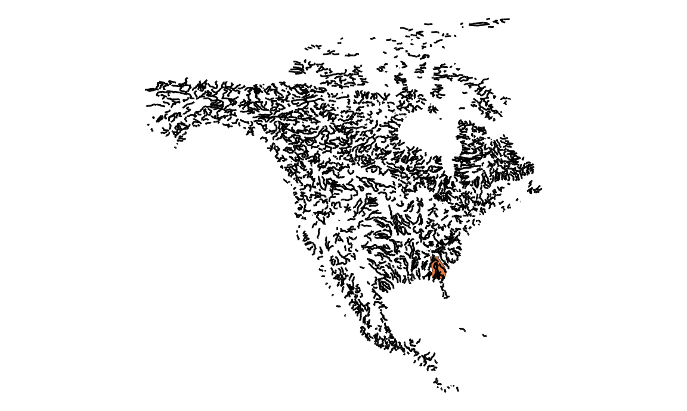
It plots Georgia, and it’s filled with orange, but it also plots every single river in North America. Oops.
We need to do a little GIS work to basically use only_georgia as a cookie cutter and keep only the rivers that are contained in the only_georgia boundaries. Fortunately, there’s a function in the {sf} package that does this: st_intersection(). Feed it two shapefile datasets and it will select the parts of the second that fall within the boundaries of the first:
ga_rivers_na <- st_intersection(only_georgia, rivers_na)
## Error in geos_op2_geom("intersection", x, y, ...): st_crs(x) == st_crs(y) is not TRUEOh no! An error! It’s complaining that the reference systems used in these two datasets don’t match. We can check the CRS with st_crs():
st_crs(only_georgia)
## Coordinate Reference System:
## User input: NAD83
## wkt:
## GEOGCRS["NAD83",
## DATUM["North American Datum 1983",
## ELLIPSOID["GRS 1980",6378137,298.257222101,
## LENGTHUNIT["metre",1]]],
## PRIMEM["Greenwich",0,
## ANGLEUNIT["degree",0.0174532925199433]],
## CS[ellipsoidal,2],
## AXIS["latitude",north,
## ORDER[1],
## ANGLEUNIT["degree",0.0174532925199433]],
## AXIS["longitude",east,
## ORDER[2],
## ANGLEUNIT["degree",0.0174532925199433]],
## ID["EPSG",4269]]
st_crs(rivers_na)
## Coordinate Reference System:
## User input: WGS 84
## wkt:
## GEOGCRS["WGS 84",
## DATUM["World Geodetic System 1984",
## ELLIPSOID["WGS 84",6378137,298.257223563,
## LENGTHUNIT["metre",1]]],
## PRIMEM["Greenwich",0,
## ANGLEUNIT["degree",0.0174532925199433]],
## CS[ellipsoidal,2],
## AXIS["latitude",north,
## ORDER[1],
## ANGLEUNIT["degree",0.0174532925199433]],
## AXIS["longitude",east,
## ORDER[2],
## ANGLEUNIT["degree",0.0174532925199433]],
## ID["EPSG",4326]]The Georgia map uses EPSG:4269 (or NAD83), while the rivers map uses EPSG:4326 (or the GPS system of latitude and longitude). We need to convert one of them to make them match. It doesn’t matter which one.
only_georgia_4326 <- only_georgia |>
st_transform(crs = st_crs("EPSG:4326"))
ga_rivers_na <- st_intersection(only_georgia_4326, rivers_na)
## Warning: attribute variables are assumed to be spatially constant throughout all geometriesYou’ll get an ominous warning, but you should be okay—it’s just because flattening globes into flat planes is hard, and the cutting might not be 100% accurate, but it’ll be close enough for our mapping purposes.
Now we can plot our state shape and the truncated rivers:
ggplot() +
geom_sf(data = only_georgia, fill = "#EC8E55") +
geom_sf(data = ga_rivers_na) +
theme_void()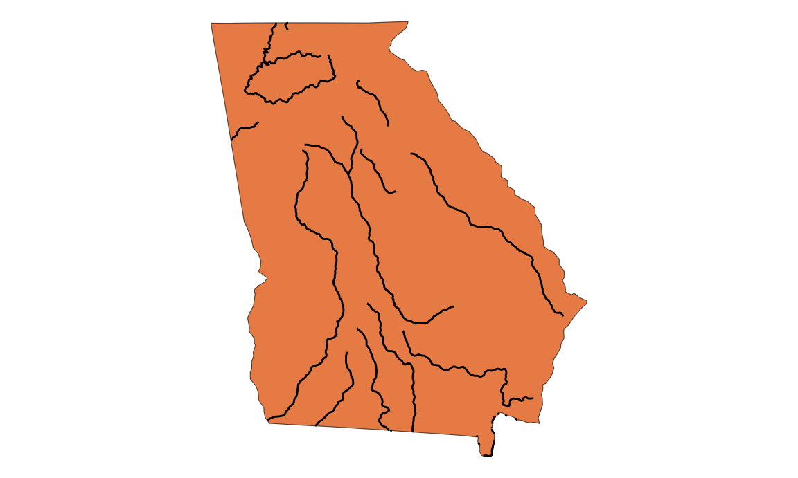
Hey! It worked! Let’s put all the rivers and lakes on at once and make it a little more artsy. We’ll use the high resolution Georgia map too, which conveniently already matches the CRS of the rivers and lakes:
ga_rivers_na <- st_intersection(only_georgia_high, rivers_na)
ga_rivers_global <- st_intersection(only_georgia_high, rivers_global)
# sf v1.0 changed how it handles shapefiles with spherical elements, which
# apparently the lakes data uses. Currently when using st_intersection() and
# other GIS-related functions, it breaks. This can be fixed by feeding the lakes
# data to st_make_valid(), which does something fancy behind the scenes to make
# it work. See this: https://github.com/r-spatial/sf/issues/1649#issuecomment-853279986
ga_lakes <- st_intersection(only_georgia_high, st_make_valid(lakes))
ggplot() +
geom_sf(data = only_georgia_high,
color = "black", linewidth = 0.1, fill = "black") +
geom_sf(data = ga_rivers_global, linewidth = 0.3, color = "grey80") +
geom_sf(data = ga_rivers_na, linewidth = 0.15, color = "grey80") +
geom_sf(data = ga_lakes, linewidth = 0.3, fill = "grey80", color = NA) +
coord_sf(crs = st_crs("EPSG:4326")) + # NAD83
theme_void()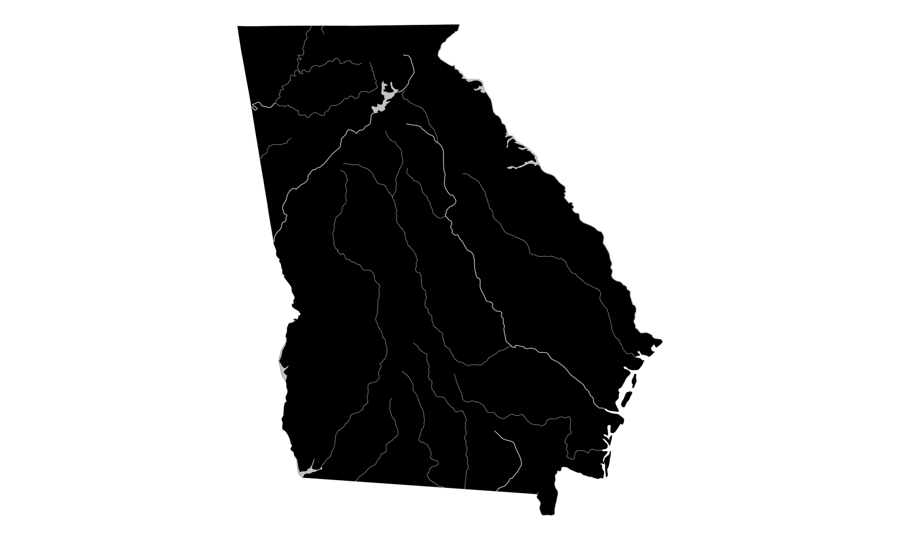
Heck yeah. That’s a great map. This is basically what Kieran Healy did here, but he used even more detailed shapefiles from the US Geological Survey.
Shapefiles are not limited to just lines and areas—they can also contain points. I made a free account at the Georgia GIS Clearinghouse, searched for “schools” and found a shapefile of all the K–12 schools in 2009. This is the direct link to the page, but it only works if you’re logged in to their system. This is the official metadata for the shapefile, which you can see if you’re not logged in, but you can’t download anything. It’s a dumb system and other states are a lot better at offering their GIS data (like, here’s a shapefile of all of Utah’s schools and libraries as of 2017, publicly accessible without an account).
We loaded the shapefile up at the top, but now let’s look at it:
head(ga_schools)
## Simple feature collection with 6 features and 16 fields
## Geometry type: POINT
## Dimension: XY
## Bounding box: xmin: 2100000 ymin: 320000 xmax: 2200000 ymax: 5e+05
## Projected CRS: NAD83 / Georgia West (ftUS)
## # A tibble: 6 × 17
## ID DATA COUNTY DISTRICT SCHOOLNAME GRADES ADDRESS CITY STATE ZIP TOTAL SCHOOLID DOE_CONGRE CONGRESS SENATE HOUSE geometry
## <dbl> <dbl> <chr> <chr> <chr> <chr> <chr> <chr> <chr> <chr> <dbl> <dbl> <chr> <chr> <chr> <chr> <POINT [US_survey_foot]>
## 1 4313 224 Early Early Cou… Early Cou… PK,KK… 283 Ma… Blak… GA 3982… 1175 43549 2 002 011 149 (2052182 494322)
## 2 4321 227 Early Early Cou… ETN Ecker… 06,07… 313 E … Blak… GA 3982… 30 47559 2 002 011 149 (2053200 5e+05)
## 3 4329 226 Early Early Cou… Early Cou… 06,07… 12053 … Blak… GA 3982… 539 43550 2 002 011 149 (2055712 5e+05)
## 4 4337 225 Early Early Cou… Early Cou… 09,10… 12020 … Blak… GA 3982… 716 43552 2 002 011 149 (2055712 5e+05)
## 5 4345 189 Decatur Decatur C… John John… PK,KK… 1947 S… Bain… GA 3981… 555 43279 2 002 011 172 (2168090 321781)
## 6 4353 192 Decatur Decatur C… Potter St… PK,KK… 725 Po… Bain… GA 3981… 432 43273 2 002 011 172 (2168751 327375)We have a bunch of columns like GRADES that has a list of what grades are included in the school, and TOTAL, which I’m guessing is the number of students. Let’s map it!
If we add a geom_sf() layer just for ga_schools, it’ll plot a bunch of points:
ggplot() +
geom_sf(data = ga_schools)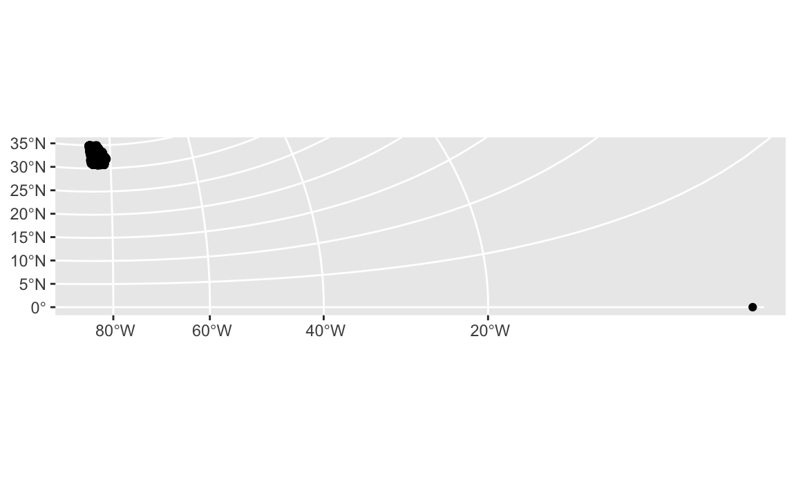
One of these rows is wildly miscoded and ended up Indonesia! If you sort by the geometry column in RStudio, you’ll see that it’s most likely Allatoona High School in Cobb County (id = 22097). The coordinates are different from all the others, and it has no congressional district information. Let’s remove it.
ga_schools_fixed <- ga_schools |>
filter(ID != 22097)
ggplot() +
geom_sf(data = ga_schools_fixed)
That’s better. However, all we’re plotting now are the points—we’ve lost the state and/or county boundaries. Let’s include those:
ggplot() +
geom_sf(data = only_georgia_high) +
geom_sf(data = ga_schools_fixed) +
theme_void()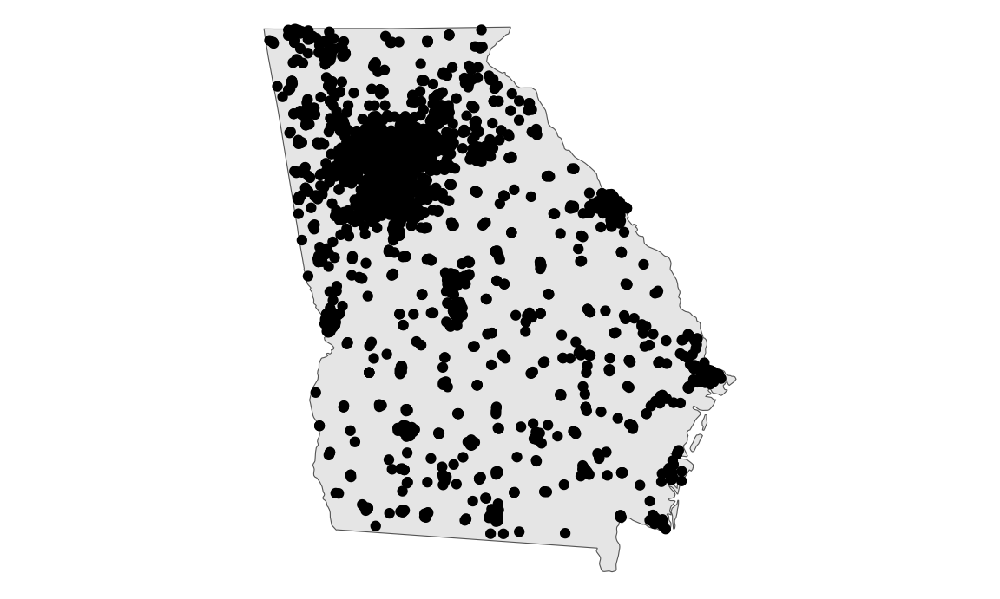
We’re getting closer. We have some issues with overplotting, so let’s shrink the points down and make them a little transparent:
ggplot() +
geom_sf(data = only_georgia_high) +
geom_sf(data = ga_schools_fixed, size = 0.5, alpha = 0.5) +
theme_void()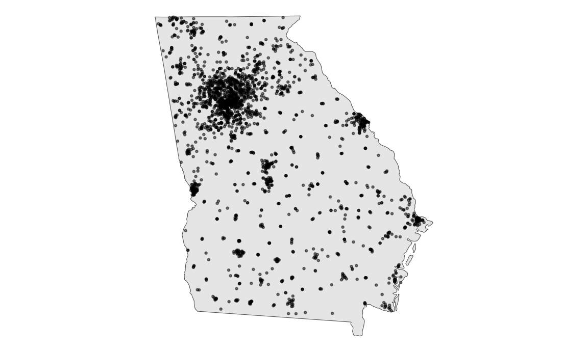
Neat. One last thing we can do is map the TOTAL column to the color aesthetic and color the points by how many students attend each school:
ggplot() +
geom_sf(data = only_georgia_high) +
geom_sf(data = ga_schools_fixed, aes(color = TOTAL), size = 0.75, alpha = 0.5) +
scale_color_viridis_c() +
theme_void()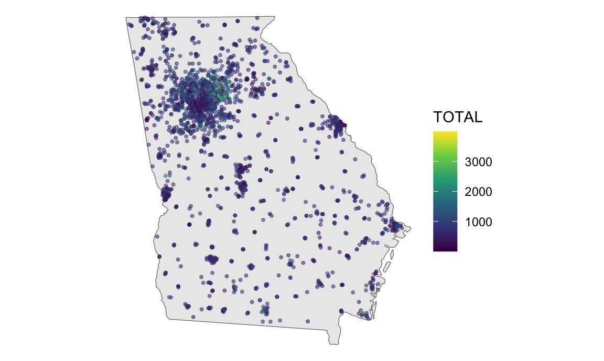
Most schools appear to be under 1,000 students, except for a cluster in Gwinnett County north of Atlanta. Its high schools have nearly 4,000 students each!
ga_schools_fixed |>
select(COUNTY, SCHOOLNAME, TOTAL) |>
arrange(desc(TOTAL)) |>
head()
## Simple feature collection with 6 features and 3 fields
## Geometry type: POINT
## Dimension: XY
## Bounding box: xmin: 2300000 ymin: 1400000 xmax: 2400000 ymax: 1500000
## Projected CRS: NAD83 / Georgia West (ftUS)
## # A tibble: 6 × 4
## COUNTY SCHOOLNAME TOTAL geometry
## <chr> <chr> <dbl> <POINT [US_survey_foot]>
## 1 Gwinnett Mill Creek High School 3997 (2384674 1482772)
## 2 Gwinnett Collins Hill High School 3720 (2341010 1461730)
## 3 Gwinnett Brookwood High School 3455 (2334543 1413396)
## 4 Gwinnett Grayson High School 3230 (2370186 1408579)
## 5 Gwinnett Peachtree Ridge High School 3118 (2319344 1459458)
## 6 Gwinnett Berkmar High School 3095 (2312983 1421933)So, plotting shapefiles with geom_sf() is magical because {sf} deals with all of the projection issues for us automatically and it figures out how to plot all the latitude and longitude data for us automatically. But lots of data doesn’t some as shapefiles. The rats data from mini project 1, for instance, has two columns indicating the latitude and longitude of each rat sighting, but those are stored as just numbers. If we try to use geom_sf() with the rat data, it won’t work. We need that magical geometry column.
Fortunately, if we have latitude and longitude information, we can make our own geometry column.
Let’s say we want to mark some cities on our map of Georgia. We can make a mini dataset using tribble(). I found these points from Google Maps: right click anywhere in Google Maps, select “What’s here?”, and you’ll see the exact coordinates for that spot.
ga_cities <- tribble(
~city, ~lat, ~long,
"Atlanta", 33.748955, -84.388099,
"Athens", 33.950794, -83.358884,
"Savannah", 32.113192, -81.089350
)
ga_cities
## # A tibble: 3 × 3
## city lat long
## <chr> <dbl> <dbl>
## 1 Atlanta 33.7 -84.4
## 2 Athens 34.0 -83.4
## 3 Savannah 32.1 -81.1This is just a normal dataset, and the lat and long columns are just numbers. R doesn’t know that those are actually geographic coordinates. This is similar to the rats data, or any other data that has columns for latitude and longitude.
We can convert those two columns to the magic geometry column with the st_as_sf() function. We have to define two things in the function: which coordinates are the longitude and latitude, and what CRS the coordinates are using. Google Maps uses EPSG:4326, or the GPS system, so we specify that:
ga_cities_geometry <- ga_cities |>
st_as_sf(coords = c("long", "lat"), crs = st_crs("EPSG:4326"))
ga_cities_geometry
## Simple feature collection with 3 features and 1 field
## Geometry type: POINT
## Dimension: XY
## Bounding box: xmin: -84 ymin: 32 xmax: -81 ymax: 34
## Geodetic CRS: WGS 84
## # A tibble: 3 × 2
## city geometry
## * <chr> <POINT [°]>
## 1 Atlanta (-84 34)
## 2 Athens (-83 34)
## 3 Savannah (-81 32)The longitude and latitude columns are gone now, and we have a single magical geometry column. That means we can plot it with geom_sf():
ggplot() +
geom_sf(data = only_georgia_high, fill = "#EC8E55") +
geom_sf(data = ga_cities_geometry, size = 3) +
theme_void()We can use geom_sf_label() (or geom_sf_text()) to add labels in the correct locations too. It will give you a warning, but you can ignore it—again, it’s complaining that the positioning might not be 100% accurate because of issues related to taking a globe and flattening it. It’s fine.
ggplot() +
geom_sf(data = only_georgia_high, fill = "#EC8E55") +
geom_sf(data = ga_cities_geometry, size = 3) +
geom_sf_label(data = ga_cities_geometry, aes(label = city),
nudge_y = 0.2) +
theme_void()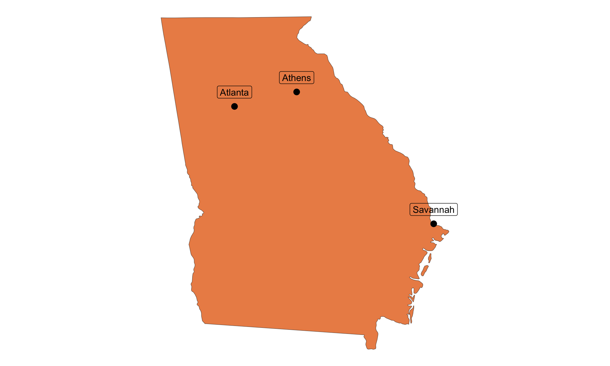
Using st_as_sf() is neat when you have latitude and longitude data already, but what if you have a list of addresses or cities instead, with no fancy geographic information? It’s easy enough to right click on Google Maps, but you don’t really want to do that hundreds of times for large-scale data.
Fortunately there are a bunch of different online geocoding services that return GIS data for addresses and locations that you feed them, like magic.
The easiest way to use any of these services is to use the {tidygeocoder} package, which connects with all these different free and paid services (run ?geo in R for complete details):
"osm": OpenStreetMap through Nominatim. FREE."census": US Census. Geographic coverage is limited to the United States. FREE."arcgis": ArcGIS. FREE and paid."geocodio": Geocodio. Geographic coverage is limited to the United States and Canada. An API key must be stored in "GEOCODIO_API_KEY"."iq": Location IQ. An API key must be stored in "LOCATIONIQ_API_KEY"."google": Google. An API key must be stored in "GOOGLEGEOCODE_API_KEY"."opencage": OpenCage. An API key must be stored in "OPENCAGE_KEY"."mapbox": Mapbox. An API key must be stored in "MAPBOX_API_KEY"."here": HERE. An API key must be stored in "HERE_API_KEY"."tomtom": TomTom. An API key must be stored in "TOMTOM_API_KEY"."mapquest": MapQuest. An API key must be stored in "MAPQUEST_API_KEY"."bing": Bing. An API key must be stored in "BINGMAPS_API_KEY".Not all services work equally well, and the free ones have rate limits (like, don’t try to geocode a million rows of data with the US Census), so you’ll have to play around with different services. You can also provide a list of services and {tidygeocoder} will cascade through them—if it can’t geocode an address with OpenStreetMap, it can move on to the Census, then ArcGIS, and so on. You need to set the cascade_order argument in geocode() for this to work.
Let’s make a little dataset with some addresses to geocode:
some_addresses <- tribble(
~name, ~address,
"The White House", "1600 Pennsylvania Ave NW, Washington, DC",
"The Andrew Young School of Policy Studies", "55 Park Place SE, Atlanta, GA 30303"
)
some_addresses
## # A tibble: 2 × 2
## name address
## <chr> <chr>
## 1 The White House 1600 Pennsylvania Ave NW, Washington, DC
## 2 The Andrew Young School of Policy Studies 55 Park Place SE, Atlanta, GA 30303To geocode these addresses, we can feed this data into geocode() and tell it to use the address column. We’ll use the Census geocoding system for fun (surely they know where the White House is):
library(tidygeocoder)
geocoded_addresses <- some_addresses |>
geocode(address, method = "census")
geocoded_addresses## # A tibble: 2 × 3
## name lat long
## <chr> <dbl> <dbl>
## 1 The White House 38.9 -77.0
## 2 The Andrew Young School of Policy Studies 33.8 -84.4It worked!
Those are just numbers, though, and not the magical geometry column, so we need to use st_as_sf() to convert them to actual GIS data.
addresses_geometry <- geocoded_addresses |>
st_as_sf(coords = c("long", "lat"), crs = st_crs("EPSG:4326"))
addresses_geometry |> select(-address)
## Simple feature collection with 2 features and 1 field
## Geometry type: POINT
## Dimension: XY
## Bounding box: xmin: -84 ymin: 34 xmax: -77 ymax: 39
## Geodetic CRS: WGS 84
## # A tibble: 2 × 2
## name geometry
## <chr> <POINT [°]>
## 1 The White House (-77 39)
## 2 The Andrew Young School of Policy Studies (-84 34)Let’s plot these on a US map:
ggplot() +
geom_sf(data = lower_48, fill = "#192DA1", color = "white", linewidth = 0.25) +
geom_sf(data = addresses_geometry, size = 5, color = "#FF851B") +
# Albers uses meters as its unit of measurement, so we need to nudge these
# labels up by a lot. I only settled on 175,000 here after a bunch of trial
# and error, adding single zeroes and rerunning the plot until the labels
# moved. 175,000 meters = 108.74 miles
geom_sf_label(data = addresses_geometry, aes(label = name),
size = 4, fill = "#FF851B", nudge_y = 175000) +
coord_sf(crs = st_crs("ESRI:102003")) + # Albers
theme_void()So far we’ve just plotted whatever data the shapefile creators decided to include and publish in their data. But what if you want to visualize some other variable on a map? We can do this by combining our shapefile data with any other kind of data, as long as the two have a shared column. For instance, we can make a choropleth map of life expectancy with data from the World Bank.
First, let’s grab some data from the World Bank for just 2015:
library(WDI) # For getting data from the World Bank
indicators <- c(life_expectancy = "SP.DYN.LE00.IN") # Life expectancy
wdi_raw <- WDI(country = "all", indicators, extra = TRUE,
start = 2015, end = 2015)Let’s see what we got:
head(wdi_raw)
## # A tibble: 6 × 13
## country iso2c iso3c year life_expectancy status lastupdated region capital longitude latitude income lending
## <chr> <chr> <chr> <dbl> <dbl> <lgl> <date> <chr> <chr> <dbl> <dbl> <chr> <chr>
## 1 Afghanistan AF AFG 2015 62.3 NA 2026-02-24 South Asia Kabul 69.2 34.5 Low i… IDA
## 2 Africa Eastern and Southern ZH AFE 2015 61.7 NA 2026-02-24 Aggregates <NA> NA NA Aggre… Aggreg…
## 3 Africa Western and Central ZI AFW 2015 56.0 NA 2026-02-24 Aggregates <NA> NA NA Aggre… Aggreg…
## 4 Albania AL ALB 2015 78.4 NA 2026-02-24 Europe & Central Asia Tirane 19.8 41.3 Upper… IBRD
## 5 Algeria DZ DZA 2015 75.2 NA 2026-02-24 Middle East & North Afri… Algiers 3.05 36.7 Upper… IBRD
## 6 American Samoa AS ASM 2015 72.7 NA 2026-02-24 East Asia & Pacific Pago P… -171. -14.3 High … Not cl…We have a bunch of columns here, but we care about two in particular: life expectancy, and the ISO3 code. This three-letter code is a standard system for identifying countries (see the full list here), and that column will let us combine this World Bank data with the global shapefile, which also has a column for the ISO3 code.
We also have columns for the latitude and longitude for each capital, so we could theoretically convert those to a geometry column with st_as_sf() and plot world capitals, which would be neat, but we won’t do that now.
Let’s clean up the WDI data by shrinking it down substantially so we only join the one life_expectancy column that we care about:
wdi_clean_small <- wdi_raw |>
select(life_expectancy, iso3c)
wdi_clean_small
## # A tibble: 266 × 2
## life_expectancy iso3c
## <dbl> <chr>
## 1 62.3 AFG
## 2 61.7 AFE
## 3 56.0 AFW
## 4 78.4 ALB
## 5 75.2 DZA
## 6 72.7 ASM
## 7 84.5 AND
## 8 61.0 AGO
## 9 76.9 ATG
## 10 70.7 ARB
## # ℹ 256 more rowsNext we need to merge this tiny dataset into the world_map_sans_antarctica shapefile data we were using earlier. To do this we’ll use a function named left_join(). We feed two data frames into left_join(), and R will keep all the rows from the first and include all the columns from both the first and the second wherever the two datasets match with one specific column. That’s wordy and weird—stare at this animation here for a few seconds to see what’s really going to happen. We’re essentially going to append the World Bank data to the end of the world shapefiles and line up rows that have matching ISO3 codes. The ISO3 column is named ISO_A3 in the shapefile data, and it’s named iso3c in the WDI data, so we tell left_join() that those are the same column:
world_map_with_life_expectancy <- world_sans_antarctica |>
left_join(wdi_clean_small, by = c("ISO_A3" = "iso3c"))If you look at this dataset in RStudio now and look at the last column, you’ll see the WDI life expectancy right next to the magic geometry column.
We technically didn’t need to shrink the WDI data down to just two columns—had we left everything else, all the WDI columns would have come over to the world_sans_antarctica, including columns for region and income level, etc. But I generally find it easier and cleaner to only merge in the columns I care about instead of making massive datasets with a billion extra columns.
Now that we have a column for life expectancy, we can map it to the fill aesthetic and fill each country by 2015 life expectancy:
ggplot() +
geom_sf(data = world_map_with_life_expectancy,
aes(fill = life_expectancy),
linewidth = 0.25) +
coord_sf(crs = st_crs("ESRI:54030")) + # Robinson
scale_fill_viridis_c(option = "viridis") +
labs(fill = "Life expectancy") +
theme_void() +
theme(legend.position = "bottom")Voila! Global life expectancy in 2015!
Sharp-eyed readers will notice that France and Norway are grayed out because they’re missing data. That’s because the ISO_A3 code in the Natural Earth data is missing for both France and Norway for whatever reason, so the WDI data didn’t merge with those rows. To fix that, we can do some manual recoding before joining in the WDI data.
world_sans_antarctica_fixed <- world_sans_antarctica |>
mutate(ISO_A3 = case_when(
# If the country name is Norway or France, redo the ISO3 code
ADMIN == "Norway" ~ "NOR",
ADMIN == "France" ~ "FRA",
# Otherwise use the existing ISO3 code
TRUE ~ ISO_A3
)) |>
left_join(wdi_clean_small, by = c("ISO_A3" = "iso3c"))
ggplot() +
geom_sf(data = world_sans_antarctica_fixed,
aes(fill = life_expectancy),
linewidth = 0.25) +
coord_sf(crs = st_crs("ESRI:54030")) + # Robinson
scale_fill_viridis_c(option = "viridis") +
labs(fill = "Life expectancy") +
theme_void() +
theme(legend.position = "bottom")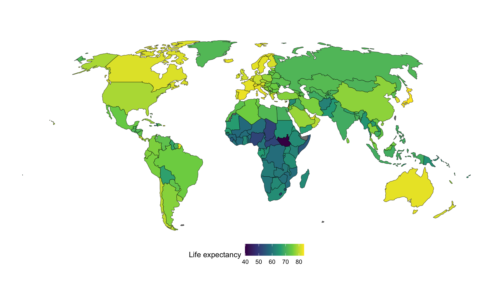
This is essentially the Gall-Peters projection from the West Wing clip.↩︎